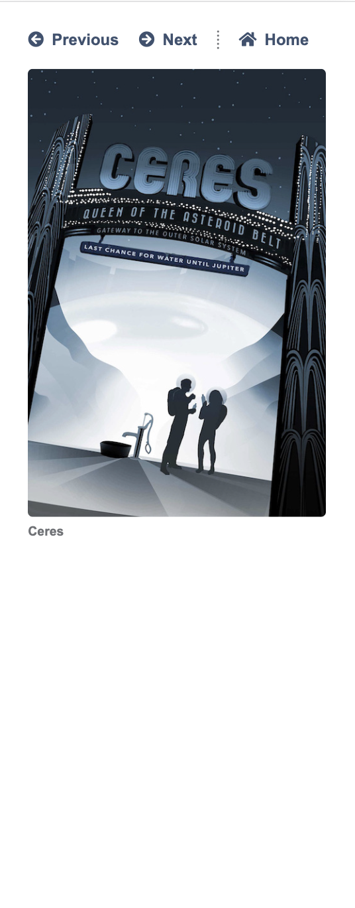
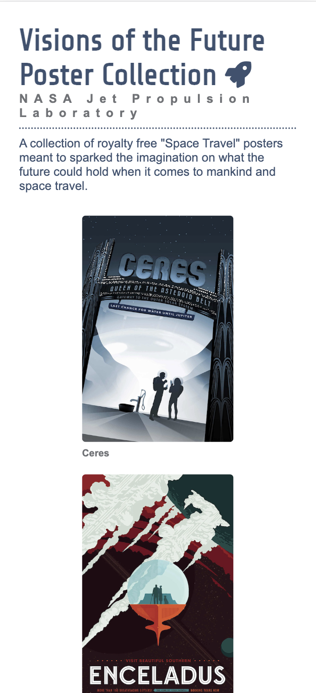
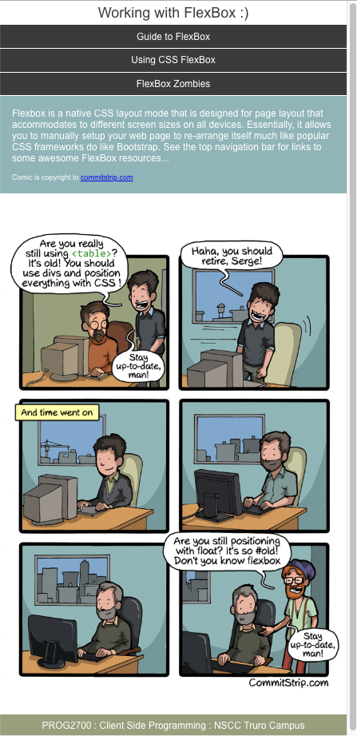
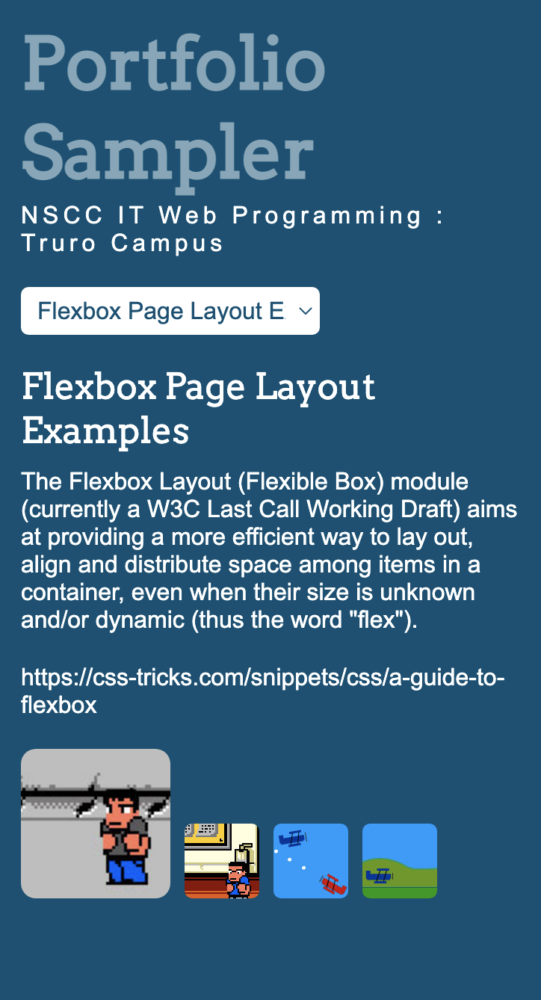

Below are samples of webpages I have created throughout my website development class using html and css.

This is a website created in a mobile phone view using media queries

This is a website created in a mobile phone view using flex box

This is a website created using flex box in a mobile view

This is a website created making use of fontawesome icons for navigation